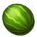
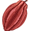
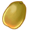

果实介绍
| 名称 | 出产土地 | 介绍 | |
|---|---|---|---|
| 萝卜 | 黄土地、红土地、黑土地、金土地 | 萝卜可用于普通土地升级红土地，也可兑换木头，升级房屋。 | |
| 苹果 | 黄土地、红土地、黑土地、金土地 | 苹果可用于普通土地升级红土地，也可兑换木头，升级房屋。 | |
| 辣椒 | 红土地、黑土地、金土地 | 辣椒可用于红土地升级黑土地，也可兑换石头，升级房屋。 | |
|  | 西瓜 | 红土地、黑土地、金土地 | 西瓜可用于红土地升级黑土地，也可兑换石头，升级房屋。 |
| 南瓜 | 黑土地、金土地 | 南瓜可用于黑土地升级金土地，也可兑换钢材，升级房屋。 | |
| 草莓 | 黑土地、金土地 | 草莓可用于黑土地升级金土地，也可兑换钢材，升级房屋。 | |
| 玫瑰 | 金土地 | 火红的玫瑰，爱情的象征，充满了神秘的力量。 | |
| 核桃 | 金土地 | 神秘的专属作物，7级及以上才可产出 | |
|  | 可可 | 金土地 | 神秘的专属作物，8级及以上才可产出 |
| 人参 | 金土地 | 神秘的专属作物，9级及以上才可产出 | |
|  | 猕猴桃 | 金土地 | 神秘的专属作物，10级及以上才可产出 |
| 雪莲花 | 黄土地、红土地、黑土地、金土地 | 使用作物激活可产出‘雪莲花’，并封印其他土地。 | |
| 菠萝 | 紫土地 | 遗忘的紫土地产物，功能等待揭晓. | |
| 开心果 | 蓝晶土地 | 在蓝晶土地上使用'名师令牌'获得的特殊果实. | |
| 火龙果 | 蓝晶土地 | 战争专属作物,勇者的象征. | |
| 百合花 | 青土地 | 花姿雅致,叶片青翠,茎干亭亭玉立,8级青土地专属限量作物! | |
| 茉莉花 | 青土地 | 清的外形,让你很难想象她有着如此香甜的花味,9级青土地专属限量作物! | |
| 水仙花 | 青土地 | 斩根削皮如紫玉,江妃水仙惜不得,10级青土地专属限量作物! |
果实重生
多余、无用的果实，可以在淘金农场通过“果实重生”功能变回“种子”状态，重新在淘金农场内种植。